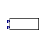

Table of Contents
- User's Guide
- Blocks
- Conditions
- Assemblies
- Regions
- Subregions
- Phases
- Species
- Connectors
- Characteristics
- Units
- Quantities
- Utilities
- Icons
Download
- Latest version (**Empty; please check back soon or contact kdavies4 at gmail.com.)
FCSys.Characteristics.Examples
ExamplesInformation
Extends from Modelica.Icons.ExamplesPackage (Icon for packages containing runnable examples).Package Content
| Name | Description |
|---|---|
| Evaluate the material properties over varying temperature and pressure | |
| Properties | Model that implements the functions of the Characteristic package |
 FCSys.Characteristics.Examples.Correlations
FCSys.Characteristics.Examples.Correlations
Evaluate the material properties over varying temperature and pressure

Information
Extends from Modelica.Icons.Example (Icon for runnable examples).
Parameters
| Type | Name | Default | Description |
|---|---|---|---|
| TemperatureAbsolute | T_start | 273.15*U.K | Initial temperature [l2.m/(N.T2)] |
| TemperatureAbsolute | T_stop | 473.15*U.K | Final temperature [l2.m/(N.T2)] |
| PressureAbsolute | p_start | U.bar | Initial pressure [m/(l.T2)] |
| PressureAbsolute | p_stop | U.bar + 0*U.atm | Final pressure [m/(l.T2)] |
Connectors
| Type | Name | Description |
|---|---|---|
| output RealOutputInternal | T | Temperature [l2.m/(N.T2)] |
| output RealOutputInternal | p | Pressure [m/(l.T2)] |
Modelica definition
model Correlations "Evaluate the material properties over varying temperature and pressure" extends Modelica.Icons.Example; parameter Q.TemperatureAbsolute T_start=273.15*U.K "Initial temperature"; parameter Q.TemperatureAbsolute T_stop=473.15*U.K "Final temperature"; parameter Q.PressureAbsolute p_start=U.bar "Initial pressure"; parameter Q.PressureAbsolute p_stop=U.bar + 0*U.atm "Final pressure"; // Property models PropertiesRT 'C+'(redeclare package Data = Characteristics.'C+'.Graphite); PropertiesRT 'SO3-'(redeclare package Data = Characteristics.'SO3-'.Ionomer); PropertiesRT 'e-'(redeclare package Data = FCSys.Characteristics.'e-'.Gas); PropertiesRT 'H+'(redeclare package Data = FCSys.Characteristics.'H+'.Gas); PropertiesRT H2(redeclare package Data = FCSys.Characteristics.H2.Gas); PropertiesRT H2IG(redeclare package Data = FCSys.Characteristics.H2.Gas (b_v=[ 1], n_v={-1,0})) "H2 as ideal gas"; PropertiesRT H2O(redeclare package Data = FCSys.Characteristics.H2O.Gas); // Note that H2O.p diverges from p in Dymola 7.4 due to the large // coefficients in the second row of H2O.Data.b_v, which cause numerical // errors. PropertiesRT H2OLiquid(redeclare package Data = Characteristics.H2O.Liquid); PropertiesRT N2(redeclare package Data = FCSys.Characteristics.N2.Gas); PropertiesRT O2(redeclare package Data = FCSys.Characteristics.O2.Gas); // Conditions Connectors.RealOutputInternal T(unit="l2.m/(N.T2)",displayUnit="K") "Temperature"; Connectors.RealOutputInternal p(unit="m/(l.T2)") "Pressure"; protected Modelica.Blocks.Sources.Ramp rampTemperature( final height=T_stop - T_start, final offset=T_start, duration=1); Modelica.Blocks.Sources.Ramp rampPressure( final height=p_stop - p_start, final offset=p_start, duration=1); "FCSys.Characteristics.Examples.Properties, with round-trip pressure calculation" extends FCSys.Characteristics.Examples.Properties; Q.Pressure p_RT=Data.p_Tv(T, v) if Data.isCompressible; end PropertiesRT; equation connect(rampTemperature.y, T); connect(rampPressure.y, p); connect(T, 'C+'.T); connect(p, 'C+'.p); connect(T, 'SO3-'.T); connect(p, 'SO3-'.p); connect(T, 'e-'.T); connect(p, 'e-'.p); connect(T, 'H+'.T); connect(p, 'H+'.p); connect(T, H2.T); connect(p, H2.p); connect(T, H2IG.T); connect(p, H2IG.p); connect(T, H2O.T); connect(p, H2O.p); connect(T, H2OLiquid.T); connect(p, H2OLiquid.p); connect(T, N2.T); connect(p, N2.p); connect(T, O2.T); connect(p, O2.p); end Correlations;
 FCSys.Characteristics.Examples.Properties
Model that implements the functions of the Characteristic package
Information
Extends from FCSys.Icons.Blocks.ContinuousShort (Short icon for a continuous block).
Connectors
| Type | Name | Description |
|---|---|---|
| input RealInput | T | Temperature [l2.m/(N.T2)] |
| input RealInput | p | Pressure [m/(l.T2)] |
Modelica definition
model Properties "Model that implements the functions of the Characteristic package" extends FCSys.Icons.Blocks.ContinuousShort; replaceable package Data = Characteristics.BaseClasses.Characteristic constrainedby Characteristics.BaseClasses.Characteristic "Characteristic data"; Connectors.RealInput T(unit="l2.m/(N.T2)") "Temperature"; Connectors.RealInput p(unit="m/(l.T2)") "Pressure"; Q.VolumeSpecific v "Specific volume"; Q.CapacityThermalSpecific c_p "Isobaric specific heat capacity"; Q.CapacityThermalSpecific c_v "Isobaric specific heat capacity"; Q.Potential g "Gibbs potential"; Q.Potential h "Specific enthalpy"; Q.NumberAbsolute s "Specific entropy"; Q.Fluidity beta "Dynamic compressibility"; Q.Fluidity zeta "Fluidity"; Q.ResistivityMaterial eta "Material resistivity"; Q.ResistivityThermal theta "Thermal resistivity"; Q.PressureReciprocal kappa "Isothermal compressibility"; Q.TimeAbsolute tauprime "Phase change interval"; Q.Mobility mu "Mobility"; Q.TimeAbsolute nu "Thermal independity"; equation v = Data.v_Tp(T, p); c_p = Data.c_p(T, p); c_v = Data.c_v(T, p); g = Data.g(T, p); h = Data.h(T, p); s = Data.s(T, p); beta = Data.beta(T, v); zeta = Data.zeta(T, v); eta = Data.eta(T, v); theta = Data.theta(T, v); kappa = Data.kappa(T, p); tauprime = Data.tauprime(T, v); mu = Data.mu(T, v); nu = Data.nu(T, v); end Properties;
FCSys.Characteristics.Examples.Correlations.PropertiesRT
FCSys.Characteristics.Examples.Properties, with round-trip pressure calculation
Information
Extends from FCSys.Characteristics.Examples.Properties (Model that implements the functions of the Characteristic package).
Parameters
| Type | Name | Default | Description |
|---|---|---|---|
| replaceable package Data | Characteristics.BaseClasses…. | Characteristic data | |
Connectors
| Type | Name | Description |
|---|---|---|
| input RealInput | T | Temperature [l2.m/(N.T2)] |
| input RealInput | p | Pressure [m/(l.T2)] |
Modelica definition
model PropertiesRT "FCSys.Characteristics.Examples.Properties, with round-trip pressure calculation" extends FCSys.Characteristics.Examples.Properties; Q.Pressure p_RT=Data.p_Tv(T, v) if Data.isCompressible; end PropertiesRT;